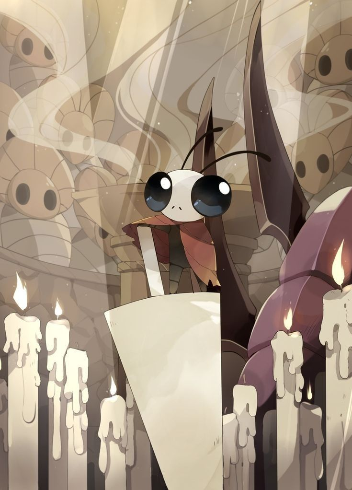

Mawlek el Incubador
Un solitario Mawlek Melancólico puede encontrarse fuera de la carretera en el Cruce Olvidado (o Cruce Infectado), lejos de sus hermanos vivos en la Cuenca Antigua . .

aqui podras encontrar todos los jefes que se encuentran por el reino de hallownest tanto como sus versiones oniricas, todos te representaran un reto quizas algunos mas que otros, pero todos son un desafio digno
Un solitario Mawlek Melancólico puede encontrarse fuera de la carretera en el Cruce Olvidado (o Cruce Infectado), lejos de sus hermanos vivos en la Cuenca Antigua . .
El receptáculo "perfecto" creado por el rey palido para contener a la infección. Un ser vacío… o casi vacío.

Versión onírica del Caballero Hueco, atrapado en un estado mental distorsionado. la infeccion controla su mente, pero su espiritu de lucha es fuerte

Protector de las minas cristalizadas, corrompido por la energía del cristal y la infeccion, no atacara si no lo molestas

Forma más agresiva del Guardián de Cristal, impulsada por la infección. Y su rabia al ser derrotado

Guardián honorable de las alcantarillas del reino. Uno de los 5 grandes o almenos eso es lo que solia ser, pero sigue luchando por su honor y por su reino
Versión onírica: White Defender, una forma más veloz y agresiva. mejorada, representa lo que fue alguna vez el gran defensor blanco, parte los grandes 5


Depredador que imita la forma de sus víctimas para atraerlas. Una criatura aterradora y mortal

Variación más agresiva y móvil de Nosk. Mas molesta, que vuela y ahora toma la forma de hornet

Exiliado de las Mantis, consumido por el odio y la infección. Lo que alguna vez fue un respetable señor mantis, ahora no es mas que una bestia traidora

Guerreras Mantis que combaten en perfecta sincronía. Su pelea es una danza de guerra, una es peligrosa pero 2 son letales y las 3 juntas hacen un combate muy energico

Soldado infectado que utiliza el poder del alma. su dominio del alma es muy bueno, pero su fuerza de voluntad no lo fue tanto

El maestro de almas era el encargado de los experimentos con alma que en un inicio eran intentos de salvar Hallownest

El tirando de almas es la versión onírica del Guerrero del Alma, mucho más peligrosa. la represenatacion de un tirano al mando

Entidad eléctrica que protege a monomon que esta soñando, una de las mentes mas grandes de cañon nublado y muy peligrosa por su zona de combate

El receptáculo elegido para contener la infección. La muestra clara del fallo del rey palido, un intento de contener a radiance

Forma final de la entidad de luz que infectó Hallownest. El dios de todo, que hasta arriba de todos, se alza frente a nosotros para acabar el mismo con nosotros

Guerrero arrogante que se considera invencible… aunque no lo es. Es una burla, pero su seguiridad creo una bestia realmente peligrosa en el mundo onirico

Principe gris zote es la representacion onirica de la propia vision de zote de el mismo, un jefe desafiante y que muestra que la arrogancia puede llevar a mucho mas que palabras

Pequeño pero letal maestro del combate con aguijón. El maestro de Mato, Oro y Sheo uno de los jefes mas desafiantes

Espíritu atrapado en un sueño eterno lleno de dolor. En eterna agonia esperando a que lo liberes de su sufrimiento

Guerrero caído que ahora combate como espíritu errante. Es el primer jefe onirico que encuentras y es muy molesto

Autoproclamado dios ascendido. No es mas que el eco de un bicho arrogante que se creia superior, pero su version onirica con su debilidad lo delata

Espíritu de un antiguo guerrero invicto. Un feroz guerrero caido, que espera algun oponente digno que le de la paz eterna

Espíritu juguetón atrapado en el sueño. El guardian de los jardines de la reina, que espera un relevo para poder descansar

Caballero errante que combate en el vacío del sueño. Un imponente guerrero que se alza sobre todo, incluso sin que radiance lo pudiera controlar, un rival de temer

Protector de la Colmena y leal a su reina. Que espera su regreo incluso estando infectado, un soldado que ni la inefeccion pudo acabar con su lealtad

Grimm es el lider la compañia Grimm que viajan por el mundo repitiendo su ritual en ciclo sin fin

La forma más poderosa del ritual de Grimm. La forma onirica del dios de las pesadillas, que espera a ser superado para que su ritual continue

El caballero falso es un bicho debil que se esconde en la armadura de una figura imponente del reino y la usa para intentar proteger a sus demas compañeros aun estando infectado
El campeon fallido es la representacion onirica de a lo que el caballero falso aspiraba a ser, una version mas fuerte, rapida y mortal
Hornet es una guerrera veloz y fuerte que recorre Hallownest intentando sobrevivir y ayudar en contra de la infección

Hornet Centinela es la version mas fuerte y letal de hornet, que no mostrara piedad y acabara contigo si le das la oportunidad, debes demostrar que eres capaz de salvar el reino

Guerreros que protegen a Lurien el soñador de la ciudad de lagrimas, son 6 determinados caballeros duros que no dudaran en matarte apenas entres a su zona.